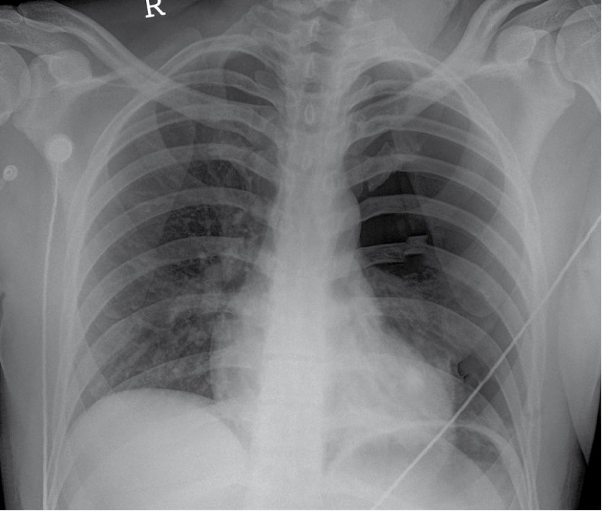
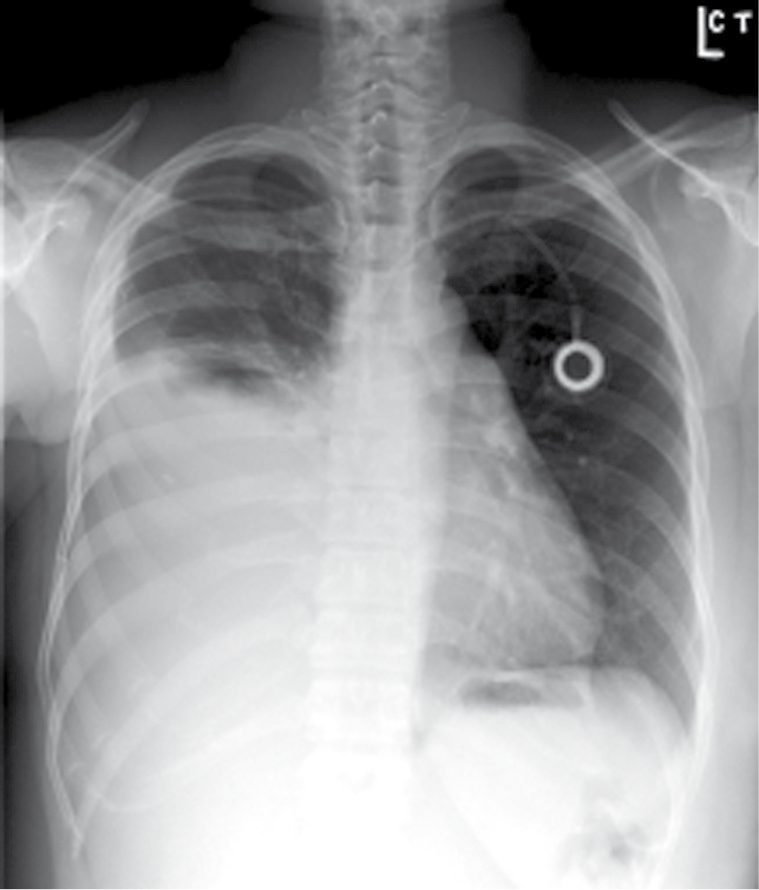

Pleural Disease and Pneumothorax
Summary
- Pleural problems are defined by what is in the space and how long it has been there. Empyema is staged by week, and the stage dictates the operation: chest drain in the first week, possible VATS deloculation in the second, and decortication by the third to fourth once a fibrous peel has trapped the lung [1].
- Pneumothorax is defined by recurrence risk, which climbs steeply: 20% after the first, 60% after the second and 80% after the third [1].
- This page covers spontaneous pneumothorax, empyema, chylothorax, lung abscess and massive haemoptysis, together with chest drain insertion.
Definition
Primary pneumothorax occurs with no pre-existing lung disease; secondary pneumothorax occurs where disease is already present, most commonly COPD, and also asthma and infection [1].
Empyema is usually secondary to pneumonia and a subsequent parapneumonic effusion, and can also follow oesophageal, pulmonary or mediastinal surgery [1].
Massive haemoptysis is more than 600 cc in 24 hours [1].
Pathophysiology
Spontaneous pneumothorax results from rupture of a bleb, usually in the apex of the upper lobe [1].
- Chylothorax follows the anatomy of the thoracic duct, which crosses the midline.
- The duct starts at the cisterna chyli in the abdomen at L2, runs along the right side of the chest between the azygos vein and the oesophagus, crosses the midline at T4-5, and drains into the left subclavian vein at its junction with the internal jugular [1].
- The consequence is a rule worth memorising: injury above T5-6 produces a left-sided chylothorax; injury below T5-6 produces a right-sided one [1].
In massive haemoptysis the bleeding is usually from the high-pressure bronchial arteries, and death is from asphyxiation rather than exsanguination [1].
Pleural fluid turnover, empyema evolution and chyle in Schwartz's account
- The parietal pleura carries somatic, sympathetic and parasympathetic fibres so its irritation is felt as chest wall pain, whereas the visceral pleura has no somatic innervation; 5–10 L of fluid a day filters through parietal microvessels (mainly in the less dependent regions) and is absorbed through the visceral pleura by the pulmonary circulation, leaving only 15–20 mL in the space at any time, and effusion follows any imbalance of these forces, in North America chiefly heart failure (500,000 a year), pneumonia (300,000), cancer (200,000), pulmonary embolus (150,000), viral disease, coronary bypass surgery and cirrhosis [2].
- Empyema arises by contiguous spread in 50–60% (lung, mediastinum, deep neck, chest wall and spine, subphrenic area), direct inoculation in 30–40% (minor interventions, postoperative infection, penetrating injury) and haematogenous seeding in under 1%; pneumococci and staphylococci still lead but Gram-negative aerobes and anaerobes are increasingly common, multiple organisms are found in up to 50%, and a polymicrobial Gram stain containing yeast strongly suggests oesophageal perforation [2].
- Entering organisms provoke a neutrophil and fluid influx with inflammatory mediators and oxygen radicals that injure endothelium and overwhelm lymphatic drainage: the early effusion is watery and free-flowing with pH above 7.3, glucose above 60 mg/dL and LDH below 500 U/L; over hours to days it thickens and loculates with fibrinous adhesions (fibrinopurulent stage); and further progression forms a pleural peel, flimsy at first but eventually a thick rind that traps the lung [2].
- Chyle carries 0.4–5 g of fat, 2.2–5.9 g of protein and 400–6800 lymphocytes/mm³ per 100 mL with clotting factors above 25% of plasma levels, so a duct injury can leak more than 2 L a day and untreated causes protein, lymphocyte and volume depletion with mortality over 50% [2].
- Massive haemoptysis arises almost always from the thick-walled systemic-pressure bronchial arteries (or pulmonary vessels pathologically exposed to bronchial pressures), which become hyperplastic and tortuous in inflammatory disease; a pulmonary artery aneurysm within a cavity (Rasmussen's aneurysm) can bleed massively, and in lung cancer massive bleeding follows pulmonary artery invasion by a large central tumour and is usually terminal [2].
- Primary spontaneous pneumothorax follows rupture of an apical subpleural bleb of unknown cause, commoner in smokers and tall thin young men; secondary pneumothorax accompanies emphysema, cystic fibrosis, AIDS, metastatic sarcoma, asthma, lung abscess and occasionally lung cancer; and catamenial pneumothorax occurs within 72 hours of the onset of menses in women in their twenties and thirties, possibly from endometriosis [2].
Clinical features
Spontaneous pneumothorax occurs in tall, healthy, thin, young men, is more common on the right, and has smoking as a risk factor; it presents with chest pain, dyspnoea and tachycardia [1].
Empyema presents with pleuritic chest pain, fever, cough and shortness of breath [1].
Chylothorax gives milky white fluid with a high lymphocyte count and triglycerides above 110 mL/μL, which stains for fat with Sudan red; the fluid is resistant to infection, and where the cause is traumatic the symptoms begin after oral intake starts [1].
A lung abscess is a necrotic area most commonly associated with aspiration, and is most commonly found in the superior segment of the right lower lobe, with Staphylococcus aureus the commonest organism [1].

Etiology
Chylothorax divides evenly in two: 50% follows trauma or iatrogenic injury, and 50% is secondary to tumour, lymphoma most commonly, from tumour burden in the lymphatics [1].
Massive haemoptysis is most commonly secondary to infection [1].
The wider differential of effusion, chylothorax and haemoptysis in Schwartz's tables
- Transudates arise from heart failure, cirrhosis, nephrotic syndrome, caval obstruction, Fontan circulation, urinothorax, peritoneal dialysis, glomerulonephritis, myxoedema, CSF leak, hypoalbuminaemia, pulmonary emboli and sarcoidosis; exudates from metastasis, mesothelioma, body-cavity and pyothorax-associated lymphoma, tuberculosis and other infections, embolism, pancreatic disease, subphrenic, hepatic or splenic abscess, oesophageal perforation, abdominal surgery, sclerotherapy, liver transplantation, post-bypass and Dressler's syndrome, ovarian hyperstimulation, Meigs' syndrome and endometriosis, rheumatoid, lupus, Sjögren's, familial Mediterranean fever, Churg–Strauss and Wegener's disease, drugs (nitrofurantoin, dantrolene, methysergide, ergots, amiodarone, interleukin-2, procarbazine, methotrexate, clozapine), asbestos, transplantation, yellow nail syndrome, uraemia, trapped lung, radiation, drowning, amyloid, ruptured mediastinal cyst, ARDS and Whipple's disease, plus haemothorax and chylothorax [2].
- Chylothorax is congenital (duct atresia, duct–pleural fistula, birth trauma), traumatic (blunt or penetrating injury; neck dissection; repair of ductus, coarctation or left subclavian origin; oesophagectomy; sympathectomy; aneurysm, mediastinal tumour and left pneumonectomy; abdominal node dissection; translumbar arteriography, subclavian cannulation and left heart catheterisation), neoplastic, infective (tuberculous lymphadenitis, mediastinitis, lymphangitis, filariasis) or due to subclavian–jugular or caval thrombosis and pulmonary lymphangiomatosis; it is usually unilateral, right-sided after distal oesophageal dissection where the duct lies against the oesophagus and left-sided after left neck dissection near the subclavian–jugular confluence, and bilateral if both mediastinal pleurae are breached [2].
- Massive haemoptysis is pulmonary (bronchitis, bronchiectasis, tuberculosis, abscess, pneumonia, aspergilloma, parasites, neoplasm, infarct, trauma, AVM, vasculitis, endometriosis, cystic fibrosis, haemosiderosis), extrapulmonary (heart failure, coagulopathy, mitral stenosis) or iatrogenic (drugs, intrapulmonary catheter), mostly inflammatory [2].
- Lung abscess is primary (necrotising pneumonia by Staphylococcus aureus, Klebsiella, Pseudomonas, mycobacteria, Bacteroides, Fusobacterium, Actinomyces, Entamoeba or Echinococcus; aspiration under anaesthesia, after stroke or with drugs and alcohol; achalasia, Zenker's diverticulum or reflux; immunodeficiency from cancer, diabetes, transplantation, steroids or malnutrition) or secondary (bronchial obstruction by tumour or foreign body, septic emboli, infected infarct, infected contusion or foreign body, and extension from empyema or mediastinal, hepatic or subphrenic abscess); at least 50% are purely anaerobic, 25% mixed and 25% or fewer aerobic only, with two to four isolates on average, and secondary abscesses most often lie distal to an obstructing carcinoma [2].
- Malignant mesothelioma, about 3000 US cases a year, has asbestos exposure as its only known risk factor (identified in over 50%, including family members exposed to work clothing), a 2:1 male predominance after 40, a latency of at least 20 years, and is linked to the narrow straight amphibole (crocidolite) fibres that reach the parenchyma rather than the large curly serpentine fibres; smoking multiplies lung cancer risk with asbestos but not mesothelioma risk [2].
- Malignant effusions come from lung cancer (49%), lymphoma and leukaemia (21%) and gut and genitourinary cancers in men, and from breast (37%), genital tract (20%), lung (15%) and lymphoma (8%) in women [2].
Diagnosis
Pleural fluid in empyema often has a white cell count above 500 cells/cc, bacteria, and a positive Gram stain [1].
Chest CT helps differentiate empyema from lung abscess [1].
Light's criteria, fluid analysis and biopsy in Schwartz's account
- Thoracentesis is indicated for most effusions of unknown cause except those of heart, liver or kidney failure and small effusions with improving pneumonia (up to 75% of cardiac effusions clear within 48 hours of diuresis) but a large effusion compromising breathing or a persistent leukocytosis despite improving pneumonia raises the possibility of empyema demanding early drainage [2].
- Clear straw-coloured fluid is usually transudative and turbid or bloody fluid exudative; by Light's criteria an effusion is an exudate if pleural-to-serum protein exceeds 0.5 and LDH ratio exceeds 0.6 or pleural LDH exceeds two-thirds of the serum upper limit; neutrophil predominance (over 50%) suggests acute inflammation (parapneumonic, embolus, pancreatitis), mononuclear predominance chronic processes such as cancer or tuberculosis, glucose below 60 mg/dL complex parapneumonic or malignant effusion, cultures are inoculated into bottles at the bedside, and grossly bloody fluid without trauma is often malignant though it also occurs with embolism and pneumonia [2].
- Pleuritic pain, haemoptysis or dyspnoea disproportionate to the effusion should prompt spiral CT for pulmonary embolism, or leg duplex or a negative sensitive D-dimer in its place [2].
- Cytology of an exudate is 70% accurate for adenocarcinoma but under 10% for mesothelioma, 20% for squamous carcinoma and 25–50% for lymphoma, so thoracoscopy with direct biopsy follows an unresolved diagnosis; over 90% of mesotheliomas present with effusion yet thoracentesis is diagnostic in under 10%, and mesothelioma is separated from adenocarcinoma by negative CEA with positive vimentin and low-molecular-weight cytokeratins and by long sinuous rather than short straight villi with a fuzzy glycocalyx on electron microscopy [2].
- Chylous fluid is milky and non-purulent but may look normal in a fasting patient; chylomicrons, high lymphocytes and triglycerides above 110 mg/100 mL are 99% accurate for chylothorax while below 50 mg/dL the chance is only 5%, and after trauma or surgery the low fat flow can delay diagnosis [2].
- A lung abscess shows on chest radiograph as a mass with a relatively thin-walled cavity, an air–fluid level indicating bronchial communication, and CT clarifies obstruction or a mass; cavitating carcinoma, loculated or interlobar empyema, infected cyst or bulla, tuberculosis, bronchiectasis, fungi and Wegener's granulomatosis are the differential, and bronchoscopy is essential to exclude tumour or foreign body and yields uncontaminated lavage cultures where sputum is often useless [2].
- CT of multiple small bullae or a large bleb predicts recurrent pneumothorax and many surgeons now use it to recommend VATS bleb resection at the first episode [2].
- Fibrous tumours of the pleura are usually incidental radiographic findings without effusion, while a rounded opacity with a crescentic radiolucency above it (Monad sign) is an aspergilloma occupying an old cavity [2].
Thresholds and severity
Empyema is staged by week, and each stage has its own treatment [1]:
| Phase | Timing | Treatment |
|---|---|---|
| Exudative | 1st week | Chest drain and antibiotics |
| Fibroproliferative | 2nd week | Chest drain and antibiotics; VATS deloculation if the lung does not re-expand |
| Organised | 3rd–4th week | Likely decortication, a fibrous peel has formed around the lung, trapping it |
Pneumothorax recurrence risk is 20% after the first, 60% after the second and 80% after the third [1].
A clinically stable pneumothorax under 10% (under 3 cm) can be observed with serial chest radiographs [1].
The indications for surgery in pneumothorax are recurrence, persistent air leak beyond 5 days, non-re-expansion despite two chest tubes, a high-risk profession such as airline pilot, diver or mountain climber, living in a remote area, tension pneumothorax, haemothorax, bilateral pneumothorax, previous pneumonectomy, and a large bleb on CT [1].
UK practice sizes the intervention to the problem, and offers three options for a pleural effusion or pneumothorax needing intervention: needle thoracentesis for first-time simple effusions or pneumothoraces with low recurrence risk; a pigtail drain, a 16G tube inserted by modified Seldinger technique, for simple effusions or pneumothoraces; and a large-bore chest tube for tension pneumothorax, recurrent pneumothorax, haemothorax or empyema [4].
The indications for a chest drain are a pneumothorax above 2 cm; a unilateral pleural effusion causing breathlessness; a bilateral pleural effusion; palliation of breathlessness in malignant effusion; effusion of any type, haemothorax, empyema, parapneumonic, malignant or chylothorax; penetrating chest injury; pleurodesis for recurrent malignant effusion; and bronchopleural fistula [4]. The contraindications are coagulopathy and local infection [4].
The safe triangle defines where the drain goes, and is delineated by the anterior border of latissimus dorsi, the lateral border of pectoralis major, and a horizontal line at the level of the nipple [4]. The patient is positioned semi-decubitus at 45° with the arm behind the head to expose the axilla; for pneumothorax the second intercostal space in the mid-clavicular line is an alternative, particularly in an emergency such as tension pneumothorax [4].
Ultrasound is used to identify the effusion, particularly in difficult or loculated cases [4]. Written consent is obtained, coagulopathy corrected, a recent chest radiograph reviewed, and essential monitoring applied; where sedation is used, patients are monitored according to AAGBI guidelines, since vasovagal reactions occur [4].
A WHO safety check is performed before the procedure begins [4].
Numerical thresholds from Schwartz
- Pleural pH below 7.2 with glucose below 40 mg/dL calls for aggressive drainage, whereas pH above 7.3 and glucose above 60 mg/dL with LDH under 500 U/L identify an early free-flowing parapneumonic effusion that may need antibiotics or simple aspiration alone; initial drainage is limited to 1500 mL to avoid post-expansion pulmonary oedema; empyema mortality ranges from 1% to over 40% in the immunocompromised [2].
- Chyle drainage above 500 mL a day in an adult or 100 mL in an infant despite parenteral nutrition and full lung expansion mandates early duct ligation or embolisation within 4–7 days, and malignant effusion carries a mean survival of 3–11 months depending on primary [2].
- A persistent air leak beyond 3 days, recurrence, complete collapse at first episode or an occupational hazard (air travel, diving, remote travel) indicates thoracoscopic bleb resection with pleurodesis [2].
- Lung abscess is a cavity of at least 2 cm (smaller multiple cavities are necrotising pneumonia), chronic after 6 weeks, and surgical drainage is indicated by failed medical therapy, abscess under tension or enlarging on treatment, contralateral contamination, diameter over 4–6 cm, necrotising infection with multiple abscesses, haemoptysis, rupture or pyopneumothorax, or inability to exclude cavitating carcinoma [2].
- Massive haemoptysis exceeds 600 mL in 24 hours with 30–50% mortality, but the pragmatic definition is bleeding that threatens respiratory stability, 100 mL a day is trivial for a 40-year-old with normal lungs and life-threatening for a 69-year-old with severe COPD and an FEV1 of 1.1 L [2].
- Malignant fibrous tumours of the pleura are defined by high cellularity, more than four mitoses per 10 high-power fields, pleomorphism, necrosis and haemorrhage; symptoms occur in 30–40% overall but 75% of malignant tumours, and hypoglycaemia, effusion and hypertrophic pulmonary osteoarthropathy (clubbing, long-bone periostitis, arthritis) accompany about 25% [2].
- Bronchiectasis affects under 1 in 10,000 overall but non-cystic-fibrosis bronchiectasis 27.5 per 10,000 over age 75, and daily sputum of 10 to over 150 mL tracks extent and severity [2].
Treatment and Management
Pneumothorax is treated with a chest drain [1].
Lung abscess is treated with antibiotics alone in 95%, with CT-guided drainage if that fails; surgery follows failure of drainage, or where cancer cannot be excluded, a lesion above 6 cm, or failure to resolve after 6 weeks [1].
Chylothorax is treated conservatively for 2 to 3 weeks first, chest drain, octreotide, and a low-fat diet or parenteral nutrition without lipids, using medium-chain rather than long-chain fatty acids [1]. If that fails and the cause is traumatic or iatrogenic, the thoracic duct is ligated on the right side low in the mediastinum, which succeeds in 80% [1]. Malignant causes are treated with talc pleurodesis and possibly chemotherapy or radiotherapy, and are less successful [1].
Massive haemoptysis is managed by protecting the good lung first: place the bleeding side down, intubate the mainstem opposite the bleeding to prevent drowning in blood, then rigid bronchoscopy to identify and possibly control the site; lobectomy or pneumonectomy may be needed, with bronchial artery embolisation for those unsuitable for surgery [1].
In organised empyema, intrapleural tPA is being used to try to dissolve the peel, and an Eloesser flap (an open thoracic window giving direct opening to the external environment) may be needed in the frail or elderly [1].

Drainage, fibrinolysis, sclerosis and the infective lung in Schwartz's practice
- Small free-flowing effusions are aspirated with a 14–16-gauge needle or catheter as an outpatient, entering low at the eighth or ninth space posteriorly, whereas loculated collections need CT or ultrasound guidance; for complete drainage a small-bore pigtail on –20 cmH₂O closed suction is used, choosing the smallest catheter that will drain effectively because small tubes hurt less but clog and kink; a high anterior tube suits air and a low posterior tube fluid, 28–32F is adequate for most situations, 36F for haemothorax or viscous empyema and 16–20F for simple pneumothorax, and when the space is in doubt the wound is widened to admit a finger to sweep adhesions [2].
- Symptomatic moderate or large malignant effusions are drained by tunnelled indwelling catheter, tube thoracostomy with a sclerosant, or VATS talc; lung entrapment by tumour or adhesions predicts pleurodesis failure and is the primary indication for an indwelling catheter, which has transformed end-of-life care by shortening hospital time, whereas a fully expanding lung and longer expectancy (as in breast cancer) favour drainage and sclerosis, mechanical pleurodesis or pleurectomy, talc, bleomycin or doxycycline succeed in 60–90%, highest with aerosolised talc at thoracoscopy, with talc slurry or doxycycline infused through a bedside tube [2].
- Antibiotic choice in empyema follows the clinical scenario rather than culture alone, since prior antibiotics sterilise cultures and pneumococcus may grow only in blood; the thin early effusion can be cleared by large-bore thoracentesis with no further drainage if the lung expands and pneumonia responds, the fibrinopurulent stage needs a chest tube or thoracoscopic clearance of adhesions, and a thick rind needs decortication by thoracoscopy or thoracotomy [2].
- Intrapleural tPA alone did not improve outcomes, but tPA 10 mg with DNase 5 mg twice daily by intrapleural injection (drain clamped for an hour) cut hospital stay by nearly 7 days, reduced surgical referral at 3 months by 77% and more than doubled the radiographic clearance of the collection, DNase cleaving uncoiled DNA to lower viscosity [2].
- A residual space after contracted lung or resection invites persistent infection: a small well-drained space is managed by leaving tubes on closed drainage until the pleural surfaces fuse, then off suction, then cutting and advancing the tubes out over weeks (often as an outpatient guided by serial CT), while larger spaces need thoracotomy and decortication, or if re-expansion fails or is too risky, open drainage with rib resection and prolonged packing followed by delayed muscle-flap closure or thoracoplasty [2].
- Chylothorax is treated by chest tube, nil by mouth and parenteral nutrition with observation for about 2 weeks, thoracic duct embolisation as soon as possible where interventional radiology allows, somatostatin with variable results, and early ligation (best by right thoracotomy, or right thoracoscopy in experienced centres) for persistent high output, malignant chylothorax often responds to radiotherapy or chemotherapy and rarely needs ligation, and mortality has fallen from over 50% to under 10% [2].
- Lung abscess is treated with 3–12 weeks of antibiotics until the cavity resolves, penicillin, ampicillin or amoxicillin plus a β-lactamase inhibitor or metronidazole (or clindamycin) for community aspiration, piperacillin–tazobactam or equivalent for hospital-acquired staphylococcal and Gram-negative infection, with surgical drainage uncommon because abscesses drain via the bronchus; external drainage is by tube thoracostomy, percutaneous catheter or cavernostomy, resection is needed in under 10%, lobectomy is preferred for bleeding or pyopneumothorax with the contralateral lung protected by a double-lumen tube or blocker, and surgery succeeds in 90% with 1–13% mortality; actinomycosis and nocardiosis need months to years of antibiotics with drainage and resection, nocardiosis also needing a search for cerebral spread [2].
- Bronchiectasis (Haemophilus 55%, Pseudomonas 26%, pneumococcus 12%; cylindrical, varicose or saccular) is managed by airway clearance, bronchodilators, 2–3 weeks of intravenous antibiotics for exacerbations, macrolides (with the caveat of breeding resistant non-tuberculous mycobacteria), inhaled tobramycin or colistin, and 7% hypertonic saline (15% FEV1 gain in a crossover trial), with resection of a localised segment or lobe for refractory symptoms once multifocal disease and uncorrectable causes are excluded, bilateral transplant for end-stage disease and embolisation first for haemoptysis [2].
- Tuberculosis is treated medically for about 26 weeks (2 months intensive isoniazid, rifampicin, pyrazinamide and ethambutol then 4 months of isoniazid and rifampicin, extended to 7 months' continuation with cavitation and a positive 2-month culture); surgery is now chiefly for multidrug- or rifampicin-resistant disease with destroyed lung and persistent thick-walled cavities, for complications of previous surgery, failed therapy, tissue diagnosis, scarring complications (massive haemoptysis, cavernoma, bronchiectasis, bronchostenosis), extrapulmonary thoracic or pleural disease and non-tuberculous mycobacteria, removing all gross disease while sparing uninvolved lung, with 3 months of preoperative and 12–24 months of postoperative drugs and cure in over 90% of good candidates [2].
- Aspergilloma is observed if asymptomatic, oral triazoles are standard for chronic cavitary aspergillosis, bronchial artery embolisation is first-line for massive haemoptysis, and VATS wedge resection with obliteration of the space (pleural tent, pneumoperitoneum, decortication, muscle or omental flap or thoracoplasty) is reserved for recurrent bleeding, systemic symptoms, progressive infiltrate or an undiagnosed mass, with about 7% recurrence and no antifungals after complete single-lesion resection; invasive aspergillosis in neutropenic patients (halo sign, cavities) needs prompt voriconazole and reversal of neutropenia with mortality 38–100% [2].
- Mesothelioma treatment remains controversial, ranging from supportive care through extrapleural pneumonectomy (lung, parietal pleura, ipsilateral pericardium and hemidiaphragm with patch reconstruction), pleurectomy and decortication, to palliative talc or indwelling catheter, often within multimodality regimens; epithelial subtypes fare better than sarcomatous or mixed tumours, and untreated disease kills by local extension and strangulation of the lung [2].
- All benign and about 50% of malignant fibrous tumours of the pleura (5–10 cm, 100–400 g, "patternless pattern" spindle cells, CD34 and CD99 positive, cytokeratin and desmin negative) are cured by complete resection, which also resolves their paraneoplastic symptoms, while incompletely resected malignant tumours recur or metastasise and over 50% die within 2–5 years [2].
Procedural interventions
Surgery for pneumothorax is VATS apical blebectomy with mechanical pleurodesis; if no blebs are found at operation, an apical wedge resection of the upper lobe is performed [1]. Pleurodesis works by causing an inflammatory reaction between the pulmonary and parietal pleura [1].
Chest drain insertion by Seldinger technique proceeds by anaesthetising 2 to 3 cm of skin and subcutaneous tissue with 1% lidocaine injected cutaneously, subcutaneously and into the pleural space; the Seldinger needle is advanced with a syringe attached, aspirating as it goes, and once air or fluid returns it is advanced a further 0.5 cm and aspiration confirmed [4]. The wire is passed with the needle held in place, the needle removed over the wire, a 0.5 cm skin incision made with the scalpel's sharp edge always facing away from the wire, the dilator passed, then the drain railroaded over the wire, secured with a suture and connected to an underwater seal [4].
Two scenarios for haemoptysis in Schwartz's account
- Treatment priorities are respiratory stabilisation, localisation, control, cause and prevention of recurrence [2].
- With significant but non-massive bleeding the patient goes to intensive care with strict bed rest, Trendelenburg positioning bleeding side down, humidified oxygen, cough suppression and mild sedation, large-bore access, aerosolised adrenaline, antibiotics, correction of coagulopathy and intravenous vasopressin (20 U over 15 minutes then 0.2 U/min); chest radiograph then CT then flexible bronchoscopy with good suction and dilute adrenaline lavage localise the lobe or segment, multidetector CT angiography maps abnormal bronchial and non-bronchial arteries, and selective bronchial artery embolisation stops bleeding immediately in over 80%, persistent bleeding prompting pulmonary angiography for a pulmonary arterial source; recurrence is 30–60%, commonest with aspergilloma and least with malignancy and active tuberculosis, and although repeat embolisation is warranted, early surgery is considered for cavitary disease [2].
- With massive bleeding the patient goes to an operating room with rigid bronchoscopy, which suctions, visualises the site and ventilates via the non-bleeding side; iced-saline lavage in 50 mL aliquots up to 1 L stops bleeding in up to 90%; the affected side is isolated preferably by an inflated bronchial blocker (a double-lumen tube is hard to place amid blood and an uncut standard tube into the good side is the alternative), embolisation follows, the blocker stays 24 hours before bronchoscopic re-inspection, and fewer than 10% need immediate thoracotomy or sternotomy, indicated by a fungus ball, lung abscess, significant cavitary disease or failure to control bleeding, since eroded necrotic cavity walls rebleed and pulmonary artery erosion needs surgical control [2].
Complications
The complication that defines the natural history of empyema is lung trapping by a fibrous peel, which is why the third to fourth week is the point at which decortication becomes necessary [1].
Recurrence is the dominant complication of pneumothorax, and it compounds: each episode raises the risk of the next [1].
Complications of pleural procedures in Schwartz's account
- Invasive pleural procedures injure lung (air leak, pneumothorax), cross the diaphragm into liver, spleen or bowel, tear intercostal or larger vessels (sometimes on a background of coagulopathy or anticoagulation), puncture the heart, lose catheters, wires or fragments in the pleura and introduce infection; rapid drainage of a large effusion can cause dyspnoea, instability and post-expansion pulmonary oedema, hence the 1500 mL initial limit [2].
- Lung abscess now rarely causes massive haemoptysis, endobronchial spread, pyopneumothorax or septic shock, and its mortality is 5–10%, rising to 9–28% with immunosuppression [2].
- A persistent residual pleural space after incomplete drainage or resection invites chronic empyema, which early thoracic consultation and complete drainage with lung re-expansion largely prevent [2].
Outcomes
Antibiotics alone resolve 95% of lung abscesses [1].
Thoracic duct ligation succeeds in 80% of traumatic chylothorax, and does markedly worse for malignant causes [1].
In massive haemoptysis the cause of death is asphyxiation, which is why airway protection and positioning precede any attempt at haemostasis [1].
References
- The ABSITE Review, 2022, Ch. 25 Thoracic
- Schwartz's Principles of Surgery, 11th ed., Ch. 19, Chest Wall, Lung, Mediastinum, and Pleura, Table 19-33
- Sabiston Textbook of Surgery, 22nd ed., Ch. 36 Management of Acute Trauma
- Oxford Handbook of Clinical Surgery, 5th ed., Ch. 4 Practical procedures
- Sabiston Textbook of Surgery, 22nd ed., Ch. 110 Lung, Chest Wall, Pleura, and Mediastinum